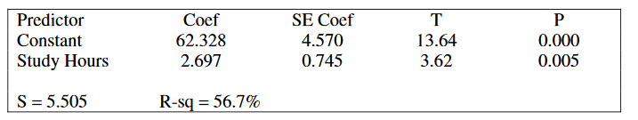

As part of a class project at a large university, Amber selected a random sample of 12 students in her major field of study. All students in the sample were asked to report their number of hours spent studying for the final exam and their score on the final exam. A regression analysis on the data produced the following partial computer output.

Amber wants to compute a 95 percent confidence interval for the slope of the least squares regression line in the population of all students in her major field of study. Assuming that conditions for inference are satisfied, which of the following gives the margin of error for the confidence interval?